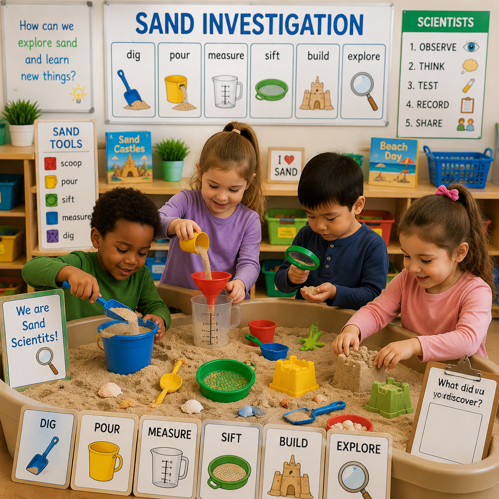

Children dig, pour, measure, sift, and build while exploring texture, materials, science, and creativity through hands-on sand investigations.

Children become scientists as they investigate sand through hands-on exploration. They observe textures, compare materials, experiment with tools, and create structures while discovering how sand behaves and changes.
Hands-On Activities
Learning Centers
Science Investigations
Printable Resources
Children investigate the properties of sand through observation, experimentation, and creative exploration.
Children explore where sand comes from and investigate its texture, color, and characteristics.
Children discover how tools, water, and movement can change how sand feels and behaves.
Children test structures, explore stability, and create imaginative sand designs.
Children investigate texture, properties of materials, cause and effect, and changes through exploration.
Children measure, compare amounts, explore capacity, and identify patterns using sand tools.
Children develop vocabulary while describing textures, discoveries, and building experiences.
Children create sand structures, artwork, and imaginative designs through hands-on experiences.
Different Types of Sand
Buckets & Containers
Scoops & Measuring Tools
Magnifiers
Building Tools
Water Exploration Supplies
Children investigate sand through observation, experimentation, measurement, and creative discovery.
Children compare different types of sand and describe how each sample feels, looks, and behaves.
Children use tools to explore volume, capacity, counting, and measurement.
Children discover how adding water changes sand and affects building and shaping.
Children observe sand grains using magnifiers and record their discoveries.
Children experiment with building towers, castles, roads, and pathways.
Children explore beaches, deserts, rocks, and how natural materials change over time.
Children explore scientific concepts through hands-on investigations with sand.
Children observe color, size, texture, and differences between sand samples.
Children investigate how water changes sand and affects movement and structure.
Children explore weight, volume, and measurement using sand tools.
Dig, scoop, pour, sift, and explore sand using hands-on sensory tools.
Investigate sand properties, textures, materials, and scientific changes.
Build castles, roads, tunnels, and structures while exploring stability.
Create sand paintings, texture artwork, and creative designs.
Explore books about beaches, deserts, nature, and materials.
Count, measure, compare, and explore capacity with sand tools.
Children use creativity and problem solving while designing with sand.
Children explore shapes, balance, and structure while creating sand designs.
Children design pathways and investigate how objects move through sand.
Children create beaches, deserts, and imaginary environments using sand.
Children explore sand textures, colors, and properties through observation and sensory experiences.
Explore Week One →Children scoop, pour, compare, and measure while exploring volume and capacity.
Explore Week Two →Children design structures, pathways, and creations while exploring balance and stability.
Explore Week Three →Children complete investigations using science, art, and engineering ideas.
Explore Week Four →Plan sensory and science experiences focused on exploration, observation, measurement, and creativity.
Document children's scientific thinking, language development, problem solving, and discoveries.
Encourage families to explore materials, textures, and science concepts together at home.
Resources to support sensory exploration, science investigations, and creative learning.
Children record what they see, feel, and discover during sand investigations.
View PrintableChildren compare amounts, sizes, and measurements using sand tools.
View PrintableFamilies can continue exploring science and creativity through sand experiences.
Visit a playground, beach, or outdoor area and discuss different materials found in nature.
Build sand structures, create designs, and explore tools as a family.
Ask questions, make observations, and discover how materials change.